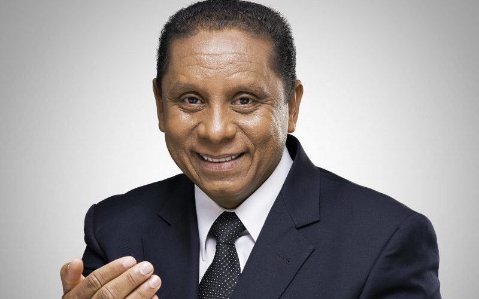

Pastor Luis Gonçalves
Há 18 anos, o paulista Luís Gonçalves da Silva se tornava pastor da Igreja Adventista do Sétimo Dia (IASD). Atualmente, ele mora em Brasília com a esposa e filhas, onde ocupa o cargo de coordenador de Evangelismo da IASD.
A igreja Adventista do sétimo dia, com mais de 21.9 milhões de membros no mundo,é uma igreja cristã protestante organizada em 1863 nos Estados Unidos. Sua origem ocorre logo depois do movimento liderado por Guilherme Miller, que ressaltou a necessidade de maior ênfase na pregação sobre a breve volta de Jesus Cristo a esse mundo. A sede sul-americana da Igreja Adventista do Sétimo Dia, responsável pela coordenação administrativa em oito países, registra mais de dois milhões de membros.

Há 18 anos, o paulista Luís Gonçalves da Silva se tornava pastor da Igreja Adventista do Sétimo Dia (IASD). Atualmente, ele mora em Brasília com a esposa e filhas, onde ocupa o cargo de coordenador de Evangelismo da IASD.
Valdemiro Santiago de Oliveira, mais conhecido por Apóstolo Valdemiro, foi fundador da Igreja Mundial do Poder de Deus, à frente da qual é líder religioso, mas também é um empresário, escritor e cantor. Atualmente, ele é lider religioso da IASD.
Pastor Jurandi Almeira é um dos fundadores das IASD na região sudoeste da Bahia. Atualmente Ocupa o cargo de Lider religioso da região Sudoeste da Bahia.